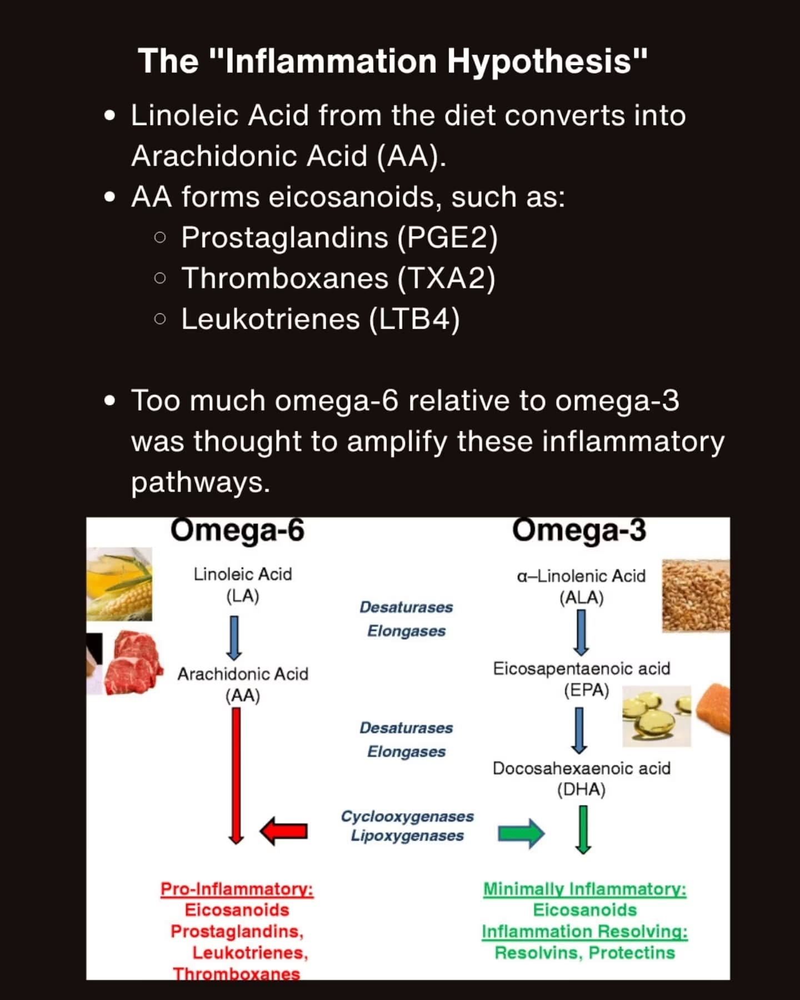

Seed oils are, in the group's reading of the evidence, not the toxin that social media often makes them out to be. The group's admins, and the researchers they quote, argue that when people eat more of the main omega-6 fat in these oils (linoleic acid) or have more of it in their blood, rates of heart disease and diabetes tend to be lower, not higher.12 The key question is almost always "compared to what?": the benefit is seen mainly when these oils replace saturated fat such as butter.34
This article walks through what the posts in this group say about the biggest claims: that omega-6 is inflammatory, that seed oils cause heart disease, that oxidation and processing make them dangerous, and that the omega-6 to omega-3 ratio matters. It also flags where the evidence is thin, where it is observational, and which statements are the personal opinions of group admins rather than findings.
Nothing here is personal medical advice. The group's admins consistently frame these findings as a reason to discuss fat choices with your own doctor or dietitian, particularly if you have established heart disease.
What seed oils and omega-6 are, and why it matters
The "seed oil" debate usually concerns eight oils: canola, corn, cottonseed, grapeseed, rice bran, safflower, soybean and sunflower. Products sold as generic "vegetable oil" generally contain one or more of them.1 Their main fat is linoleic acid (LA), an omega-6 polyunsaturated fat that is also the main fat in most nuts and seeds.1314
Linoleic acid is an essential fat: the body cannot make it, so any sustained high level in blood or tissue can only come from the diet.1516 Harvard's Nutrition Source, quoted in the group, describes omega-6 fats as a structural part of every cell and a building block for hormones that regulate inflammation, blood-vessel narrowing and clotting.17
Why does it matter for the heart? The online claim is that omega-6 is converted to arachidonic acid (AA), a precursor of inflammatory compounds, and therefore drives chronic inflammation and disease.18 The group's position is that this biochemistry sounds convincing on paper but does not hold up when tested in people.19

What the evidence shows
Different study designs answer different questions, so it helps to take them in turn.
Blood and tissue biomarker cohorts
Food questionnaires are imperfect, so Louis Nervegna repeatedly emphasizes studies that measured omega-6 directly in blood or tissue and then followed people forward in time (prospective cohorts).1520
- Heart disease. A 2019 pooled analysis in Circulation of about 70,000 people from 30 prospective cohorts (described elsewhere as over 68,000 people in 13 countries, followed from 2.5 to over 30 years) found that higher linoleic acid levels were associated with 7% lower total CVD, 22% lower CVD mortality and 12% lower ischemic stroke, per interquintile range.56 Louis describes the comparison as the 90th versus the 10th percentile of the range.5 The strongest associations were for cardiovascular mortality and stroke.6 A later summary of the same work notes that higher levels of LA, and possibly AA, were associated with lower risk of major cardiovascular events.21
- Type 2 diabetes. A pooled analysis of 39,740 adults from 20 cohorts (Lancet Diabetes & Endocrinology, 2017) reported that the top fifth of linoleic acid levels had 43% lower relative risk of type 2 diabetes than the bottom fifth. The authors concluded that LA may have long-term preventive benefits and that arachidonic acid is not harmful.7
- Mortality. In 853 older men, a higher share of linoleic acid in subcutaneous fat was associated with lower death rates over 15 years of follow-up (JAMA Cardiology, 2016).22 A 2024 UK Biobank analysis of over 250,000 people reported that higher plasma LA was associated with 17% lower total mortality, 13% lower CVD death, 19% lower cancer death and 18% lower death from other causes.21 A 2025 meta-analysis of 150 cohorts linked higher dietary and circulating omega-6 to lower risk of CVD, cancer and all-cause mortality, though the associations vary by cancer type and are less evident in people with existing disease.23
Louis also makes a logical argument: causation requires at least a positive association, and the direct measurements show an inverse one, so omega-6 causing heart disease is, in his words, "near impossible."20 This is his reasoning, not a trial result, and observational data cannot by themselves prove benefit. The Johns Hopkins author quoted in the group says this explicitly: the 2019 study shows a strong association, not that higher levels caused the lower risk, which is where other study types come in.6
Randomized trials of swapping fats
The most consistent trial message in the group concerns substitution: replacing saturated fat with polyunsaturated fat.
- A meta-analysis of randomized trials found roughly 19% fewer coronary heart disease events when saturated fat was replaced with polyunsaturated fat, along with lower LDL cholesterol.24 Another summary cites an American Heart Association analysis giving 29% lower coronary heart disease risk for the same swap.23 Louis cites 29% as well, but only for trials meeting strict criteria: no trans fats, food supplied, at least two years of intake, biomarker-verified adherence and validated events.25 The two figures come from different sets of trials, so they should not be read as one result.
- The Lyon Diet Heart Study randomized over 600 heart-attack survivors to a Mediterranean-style diet (canola oil, olive oil, canola margarine) or an American Heart Association diet. After a mean 27 months, cardiac death plus non-fatal heart attack had a risk ratio of 0.27 (95% CI 0.12 to 0.59), and total mortality a risk ratio of 0.30 (95% CI 0.11 to 0.82).26 The Lyon diet changed several things at once, so it cannot isolate seed oil.
- The Indo-Mediterranean Heart Study (about 1,000 people, Lancet 2002) used soybean oil without olive oil and reported fewer heart attacks and strokes, comparable to CORDIOPREV, PREDIMED and Lyon.12
- A 2016 PLoS Medicine meta-analysis of 102 feeding trials (4,660 participants) found that only polyunsaturated fat was linked to lower fasting glucose, lower HbA1c, better HOMA-IR (an insulin-resistance measure) and better insulin secretion. Monounsaturated fat did well but less so, and saturated fat showed no appreciable benefit for glucose control.2728
Show data
| Risk ratio (log scale) | 95% CI | |
|---|---|---|
| Cardiac death or non-fatal heart attack | 0.27 | 0.12–0.59 |
| Total mortality | 0.30 | 0.11–0.82 |

Food-based cohorts: butter versus plant oils
A 2025 JAMA Internal Medicine analysis from Harvard followed 221,054 adults from the Nurses' Health Study, Nurses' Health Study II and Health Professionals Follow-Up Study for over 30 years. Those who ate the most butter had a 15% higher risk of death than those who ate the least, while those who ate the most plant oils had a 16% lower risk.1129
Each extra 10 g a day of butter was linked to 12% higher cancer mortality, and each extra 10 g of plant oil to 11% lower cancer death and 6% lower CVD death.11 In a substitution model, swapping 10 g of butter for plant oil was associated with 17% lower all-cause and cancer mortality, with the biggest benefits from olive, canola and soybean oil.113031 Layne Norton notes the result held when olive oil was excluded from the plant-oil total.32 The study's authors described the magnitude as surprising and said even small swaps could matter over the long term.29
A video review in the group discusses strengths and weaknesses of this study, though the post itself gives no numbers.33 Participants' intake came from questionnaires every four years, which is a limitation of any food-frequency analysis.29
Inflammation
This is the claim the group addresses most often.
- A 2017 meta-analysis in Food & Function of 30 randomized trials (1,377 people) found no significant effect of higher LA intake on TNF (SMD -0.01), IL-6 (0.11), adiponectin (0.17), MCP-1 (0.14) or, across 16 studies, CRP (0.09, 95% CI -0.05 to 0.24).83435
- A 2012 review of 15 trials found virtually no evidence that adding LA raises inflammatory markers in healthy adults.23
- A 2023 review states that human trials show increasing LA intake does not increase, and may decrease, inflammatory markers, and that conversion of LA to arachidonic acid is tightly regulated and minimal.36 One post puts the conversion rate at about 0.2%.910
- A small 2026 trial in 10 adults gave 30 g of soybean oil daily for four weeks: red blood cell arachidonic acid fell significantly and IL-6 trended down.1037 With only 10 participants and a short duration, this is suggestive, not definitive.
- Cross-sectional data agree. In 1,894 people, higher plasma LA went with lower glucose, insulin, HOMA-IR, CRP, glycoprotein acetyls and serum amyloid A.143839 In 2,777 Framingham participants, red-cell LA was inversely associated with five of ten inflammatory markers and positively associated with none.21 Cross-sectional studies show associations at one time point and cannot show causation.14
Louis argues that the inflammation claim is "one of the biggest lies" of influencers and that omega-6 actually inhibits NF-kB, a major driver of inflammation.940 Layne Norton adds a caveat: eating a large amount of any fat and gaining body fat can raise inflammation, but that is due to excess body fat, not seed oils specifically.37
Liver fat, body weight and metabolism
A 12-week trial in 110 people with fatty liver disease (British Journal of Nutrition, 2024) replaced ghee with the same amount of rapeseed (canola) oil. Liver steatosis fell versus controls (P < 0.001), with improvements in liver enzymes, lipids, HOMA-IR, weight and waist.4142 Note the comparison was against continued ghee, so it tests a swap and not canola oil on top of an unchanged diet.43 A secondary analysis of another 12-week trial found that rising plasma n-6 PUFA was associated with larger liver fat loss, while higher saturated fat was associated with less.44
A 2026 scoping review of the clinical and observational evidence found that seed oils do not appear to increase hunger, reduce energy expenditure or cause weight gain compared with other fats.23 It is a narrative review, so it summarizes studies without pooling them statistically. One cited network meta-analysis nevertheless noted low-to-moderate certainty that soybean, palm and sunflower oils were associated with weight gain.23
Nuances, controversies and common misconceptions
"The data are mostly correlations." Largely true for cohorts, and the group acknowledges it.614 Louis answers that decades-long randomized outcome trials are impractical, so prospective biomarker cohorts are the main feasible design, and that these are supported by shorter trials on mechanisms and risk markers.1525
"Old trials showed seed oils are harmful." The Minnesota Coronary Experiment, Sydney Diet Heart Study and Rose Corn Oil Trial are sometimes cited against seed oils. Louis argues they fail modern quality criteria: the first two used partially hydrogenated oils (trans fats), and the Minnesota trial had 75% dropout in year one and a mean duration of 384 days.25 This is his critique, and readers should look at the trials themselves. In one exchange, Louis shares a critique of Paul Saladino for dismissing adipose-tissue LA data by pointing to lower-quality research left out of the meta-analysis for not meeting inclusion criteria.45
"Oxidation makes them dangerous." One shared post argues that "PUFAs can oxidize" does not show that eating them increases oxidative damage in humans, citing controlled trials that found no significant rise in lipid peroxidation or oxidative DNA damage.24 A trial of about 30 g a day of soybean oil showed no increase in oxidized LDL.37 The same post stresses that LDL is retained in the artery wall before most oxidation occurs, so LDL concentration still matters.24 The 2026 review also states that repeatedly overheating any oil can degrade it but that most home cooks need not worry, and that residual hexane (an extraction solvent) is far below regulatory limits, with one calculation suggesting about 4,900 g of seed oil a day would be needed to exceed a conservative limit.23
"The omega-6 to omega-3 ratio is what counts." Harvard's Nutrition Source, quoted in the group, says the ratio hypothesis has not been supported in humans, that in the Health Professionals Follow-up Study the ratio was not linked with heart disease because both fats were beneficial, and that the ratio is not a useful indicator of a diet's healthfulness. It also says many Americans would benefit from more omega-3 and that no groups consuming excessive omega-6 could be found.1746 Martha Belury similarly says the imbalance claim oversimplifies the science and that scientists "think we need both."47
"Seed oils caused the heart disease epidemic." Louis points out that since 1950 vegetable oil consumption rose about fivefold and butter and lard fell two- to threefold, while heart disease death rates fell over fourfold.4849 He presents this as a raw, unadjusted correlation, which is an ecological comparison and not a controlled test; many other factors changed over those decades. Finland's North Karelia Project is cited as a real-world example: serum cholesterol fell about 15-20% and CHD mortality fell nearly 80% in working-age men after saturated fat was replaced with unsaturated fats, though smoking reduction and blood-pressure control also contributed.50


"Seed oils cause cancer." A viral colorectal cancer study was a molecular screen of 40 tumor biopsies with no dietary component.9 Large prospective cohorts showed no association between seed oil intake and prostate cancer, nor with colon cancer when ultra-processed food was accounted for, per a video Louis shared.51
Evidence strength differs by oil. Louis states plainly that olive oil is the only fat tested in multiple large randomized outcome trials (CORDIOPREV, PREDIMED, Lyon), and that evidence for canola and soybean oil from large trials, while present, is "not nearly as strong."12 A systematic review of 42 trials found no significant effect of rapeseed oil on inflammation, per a post from Viva!.52
Mechanistic and animal findings are early. Posts on linoleic acid activating PPAR-gamma, an insulin-sensitizing pathway targeted by some diabetes drugs, are mechanistic.1636 Roundworm studies reported 20-25% longer lifespan with omega-6 supplementation via autophagy, with similar responses in human cell lines.5354 A 2026 Cell study found that a downstream omega-6, DGLA, killed senescent cells in mice.5556 None of these are human outcome data, and the group's own summaries say so.5355
Practical guidance: what this means for you
The posts mostly frame this as "stop fearing these oils, and choose them over saturated fat," not as "add more oil." Points the group's admins would suggest discussing with your doctor or dietitian:
- Think in swaps. The benefits cited are for replacing butter, ghee and other saturated fats with unsaturated oils, not for adding oil on top.31143
- Consider olive oil as a first choice, but not the only acceptable oil. Willett's view, as relayed in the group, is that olive oil earns its reputation but soybean and canola deserve a place; the real upgrade is swapping out saturated fats.12 Louis cites the Harvard cohorts, where the biggest benefits came from olive, canola and soybean oil.30
- Do not avoid nuts and seeds to cut omega-6. Louis argues this is probably harmful because it lowers blood and tissue omega-6 in the long term.15 Nuts and seeds are the chief dietary source of LA.13 If someone prefers to avoid oils, nuts and seeds are described as good alternative sources of polyunsaturated fat.3
- Pair omega-6 with omega-3 sources. Soybean oil supplies both omega-6 and omega-3, whereas corn and sunflower oils supply omega-6 without omega-3.12 Harvard's advice is that many Americans would benefit from more omega-3.17
- Do not expect oil changes alone to lower CRP. Louis says avoiding seed oils is not a route to lower inflammatory markers; human trials have repeatedly shown that reducing omega-6 fails to lower them.57
- Mind the context of the whole diet. The Harvard swap that was associated with benefit involved 10 g (just under a tablespoon) of butter, and the Lyon trial used a whole Mediterranean-style pattern.2629 Trial doses cited in the group include about 30 g a day of soybean oil.37
- Heating. The 2026 review says repeated overheating at very high temperatures can degrade any oil but is not something most home cooks need to worry about.23
Frequently asked questions
Are seed oils inflammatory?
In randomized human trials, no consistent increase in inflammatory markers has been seen. The 2017 meta-analysis of 30 trials found no significant change in CRP, IL-6, TNF, adiponectin or MCP-1.8 Blood levels of LA are in fact associated with lower inflammatory markers in several cohorts.1421
Do seed oils raise or lower heart disease risk?
Prospective biomarker cohorts link higher LA to lower CVD, and trials of replacing saturated with polyunsaturated fat show fewer coronary events.524 Stanford's Christopher Gardner and Tufts' Dariush Mozaffarian, quoted in the group, say that the human evidence shows seed oils are not harmful and may lower LDL, glucose and heart-attack risk.419 The Lyon and Indo-Mediterranean trials offer outcome data but combine several dietary changes.12
Is butter or ghee better than seed oils?
The group's evidence points the other way. In the Harvard cohorts, higher butter intake was associated with higher mortality and plant oils with lower mortality.11 Layne Norton says he knows of no hard-outcome data showing saturated fat is healthier than seed-oil polyunsaturated fat at a 1-to-1 swap.32 Louis adds that over 100 trials in aggregate show unsaturated fats improve glucose measures while saturated fat shows no appreciable benefit.27
Is the omega-6 to omega-3 ratio important?
According to Harvard's Nutrition Source, quoted by Louis, it is not a useful indicator of how healthy a diet is.1746 That does not mean omega-3 is unimportant; the same source says many Americans could benefit from more of it.17
What about seed oils and cancer?
The Harvard cohort associated butter with higher cancer mortality and plant oils with lower.11 Louis says hundreds of prospective cohorts and trials have shown no obvious relationship between fat intake and cancer, for either saturated or omega-6 fats.51 A 2026 review by Nagra and colleagues in Current Nutrition Reports looked beyond cardiovascular disease and reported, for example, that 7 of 8 recent cohort studies linked higher LA to better cognition or lower dementia risk, and it also examined skin cancer, liver fat, muscle and aging.13